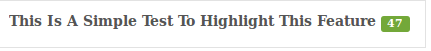
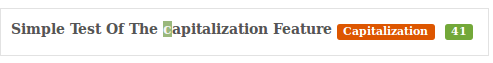
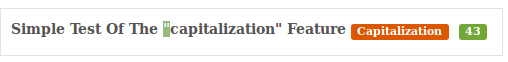
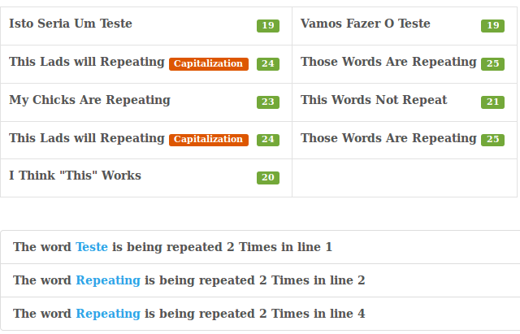

To Separate Values Use The TAB Key (Only If Typing Manually)
Hello guys,
This tool helps you spot different errors that will happen while working on spreadsheets. The errors this tool spots for now are:
Character Counting
By default this is currently 50 so when it hits 51 it will change color from green to red. 
Word Capitalization
Word caps as I call it works by telling you if the first character of a word is capitalized or not. It also works by wrapping a word in quotes as some people have requested this.  
Extra Space Checker
As the name says this feature checks for extra space before or after the values.
Intercapitalization Check
Another requested feature was intercapitalization checking which simply means capital letters in the middle of a word.
Word Repetition
Another extra thing it does is checking for repetition. This may not be helpfull for everyone but may give you a hint if something needs to be changed. 
Chrome Native SpellChecking
You can get native speelchecking in your language by default by simply downloading a dictionary to the browser which is already built into the browser. For more detail read this ArticlePlease note this tool is provided as-is and will not be updated anymore due to the transition to a new more modern tool which is already being used. Also note there are no garantees that this tool will be efficient in all scenarios as there are too many team specific ways to work which would be impossible to take into account. Use this tool at your own risk and I hope it helps.